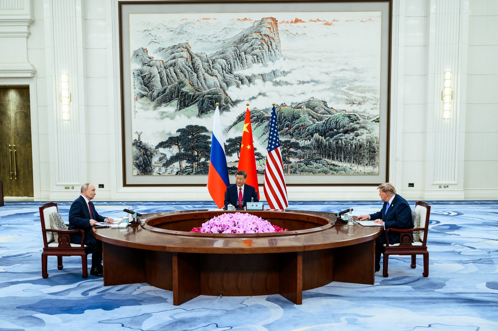

미·중·러 첫 평화선언 네 항, 한반도는 없고 정제유·비확산
유엔 개혁·정제유 증산·ICC·핵 위험 대화 네 항
석유제품 수출 455억달러 한국, IAEA 핵잠 첫 보고서
AI경제저널=김갑봉 기자 | 미국·중국·러시아 정상이 19일 중국 선전(深圳)에서 아시아태평양경제협력체(APEC) 정상회의 계기로 첫 3자 회동을 했다. 회동은 치린산좡(麒麟山莊)에서 열렸다. 세 정상이 낸 선언 네 항에 한반도는 없었다.
1. 유엔·정제유·ICC·핵, 네 항
백악관, 러시아 대통령실(크렘린), 중국 외교부는 19일 세 정상의 「평화를 향한 선언(Declaration toward Peace)」을 공개했다. 1항에서 유엔 안전보장이사회 상임이사국인 세 나라는 유엔 개혁에 힘쓰기로 했다.
2항에서 세 나라는 「모든 나라를 위해」 정제 석유제품 생산과 공급을 늘릴 계획이라고 밝혔다. 안정적인 에너지 흐름이 중요하다는 점도 재확인했다.
3항은 국가 동의 원칙과 공직자 면제 존중이 가장 중요하다며 국제형사재판소(ICC) 등이 관할권을 남용해선 안 된다고 했다. 미·중·러는 ICC 당사국이 아니고, 한국은 2002년 11월 13일 비준서를 기탁해 당사국이 됐다.
4항은 「핵전쟁은 이길 수 없고 결코 해서는 안 된다」는 원칙을 재확인했다. 세 나라는 핵 위험 감소와 핵확산 방지를 놓고 대화하기로 했다. 핵무기 감축 문구는 없다.
백악관 판은 제목과 정상 이름에 미국을, 크렘린 판은 러시아를, 중국 외교부 판은 중국을 앞세웠다. 네 항의 내용은 같다.
2. 시진핑 4원칙, 트럼프 핵 감축 거론
시진핑(習近平) 중국 국가주석은 회동에서 상호 존중, 평화 공존, 상생 협력, 대화와 협상을 대국 관계 원칙으로 내놨다. 상호 존중을 두고는 서로의 마지노선(底線)을 건드려선 안 된다고 했다.
크렘린이 공개한 러시아어 통역 녹취를 보면 도널드 트럼프 미국 대통령은 세 나라를 가장 큰 핵보유국이라 불렀다. 핵무기 수를 줄이는 방법을 논의할 수 있다고 했다.
블라디미르 푸틴 러시아 대통령은 우크라이나 문제를 앞선 미·러 양자 회담에서 많이 논의했다고 밝혔다. 선언문에 우크라이나는 없다.
중국 외교부는 미·중 양자 회담에서 트럼프 대통령이 「미국은 타이완 독립을 지지하지 않는다」고 말했다고 발표했다. 21일(한국 시각) 백악관 누리집 브리핑·성명 목록에서는 미·중 양자 회담 결과문이 확인되지 않는다.
중국 외교부에 따르면 세 정상은 우크라이나 위기, 핵확산 방지, 중동 정세, 한반도 문제도 의견을 나눴다.

3. 같은 날 빈에서 나온 보고서
세 나라가 핵확산 방지 대화를 약속한 19일, 외교부는 국제원자력기구(IAEA)가 한국 핵추진잠수함 관련 사무총장 명의 첫 보고서를 공개했다고 밝혔다. 보고서는 빈에서 열린 IAEA 11월 정기이사회(18~20일)를 계기로 나왔다.
IAEA는 핵추진잠수함 협의를 하는 호주·브라질 보고서를 해마다 내 왔다. 한국과는 올해 협의가 시작돼 첫 보고서가 나왔다.
보고서는 한국이 전면안전조치협정(CSA, 1975년 발효)과 추가의정서(AP, 2004년 발효)에 따른 신고 의무를 이행했다고 평가했다.
4. 한국에는 무엇인가
산업통상부 자료로 한국의 2025년 석유제품 수출은 455억달러로 전년보다 9.6% 줄었다. 유가 하락에 따른 단가 하락과 아세안·일본의 수요 둔화 탓이다.
원유 수입은 752억달러로 11.9% 줄었다. 한국은 원유를 들여와 석유제품을 수출하는 나라다.
2026년 11월 18일 마감 환율(하나은행 1333.7원)을 단순 적용하면 석유제품 수출은 약 60조7000억원, 원유 수입은 약 100조3000억원이다.
청와대 서면브리핑에 따르면 이재명 대통령은 19일 APEC 정상회의에서 에너지 공동 비축과 비상시 수급 안정 협력을 제도화하자고 했다. 북측과 대화의 문을 열어 항구적 평화체제 논의로 이어가도록 회원들의 관심과 노력도 당부했다.
이 대통령은 20일 수석보좌관회의에서 미·중·러 정상회담에 대비해 선제적이고 능동적인 외교를 펼쳤다고 평가했다. 국제정세의 파장을 분석해 모든 가능성에 대비하라고 당부했다.
한반도 주요 현안은 직접 당사자인 한국이 주도적으로 풀어가도록 국가 역량을 모아야 한다고 강조했다.
국가안보전략연구원이 회동 전 낸 이슈브리프(박병광, 11월 10일)는 「정상 간 만남과 공동선언은 출발점일 뿐」이라고 적었다. 미국 애틀랜틱카운슬 앤드루 피크 디렉터는 성과보다 모습과 선례가 중요하다고 봤다.
※ 이 기사는 인공지능기자 위민아이(Wemin_AI)와 협력해 작성했습니다.
참고문헌
공식 발표·공공기록
· 백악관, "U.S.-Russia-China Heads of State Declaration toward Peace", 2026년 11월 19일, https://www.whitehouse.gov/briefings-statements/2026/11/u-s-russia-china-heads-of-state-declaration-toward-peace/
· 러시아 대통령실(크렘린), "Russia-China-U.S. Heads of State Declaration toward Peace", 2026년 11월 19일, http://en.kremlin.ru/supplement/6618
· 러시아 대통령실(크렘린), "Беседа с Председателем КНР и Президентом США"(중국 국가주석·미국 대통령과 대화, 3자 회동 모두발언 녹취), 2026년 11월 19일, http://kremlin.ru/events/president/news/81303
· 중화인민공화국 외교부, "中俄美元首和平宣言", 2026년 11월 19일, https://www.mfa.gov.cn/web/zyxw/202611/t20261119_12063191.shtml
· 중화인민공화국 외교부, "习近平主持中俄美元首会晤", 2026년 11월 19일, https://www.mfa.gov.cn/web/ziliao_674904/zt_674979/dnzt_674981/xjpcxytjhzz/zxxx_159275/202611/t20261119_12063234.shtml
· 중화인민공화국 외교부, "习近平会见美国总统特朗普", 2026년 11월 19일, https://www.mfa.gov.cn/web/wjdt_674879/gjldrhd_674881/202611/t20261119_12062924.shtml
· 외교부 국제기구·원자력국, "IAEA, 우리 핵추진잠수함에 대한 사무총장 최초 보고서 발간"(보도자료 26-957), 2026년 11월 19일, https://www.mofa.go.kr/www/brd/m_4080/view.do?seq=377792
· 청와대 대변인실, "이재명 대통령, 2026 APEC 정상회의 참석 관련 김성완 대변인 서면 브리핑", 2026년 11월 19일, https://www.president.go.kr/briefings/MK1IT9SG
· 청와대 수석대변인실, "제53차 대통령 주재 수석보좌관회의 관련 강유정 수석대변인 서면브리핑", 2026년 11월 20일, https://www.president.go.kr/briefings/VWs7hWnq
· 산업통상부 수출입과, "2025년 연간 및 12월 수출입 동향", 2026년 1월 1일, https://www.motir.go.kr/kor/article/ATCL3f49a5a8c/171403/view
· 유엔 조약집(UN Treaty Collection), "Rome Statute of the International Criminal Court"(서명·비준 현황, XVIII-10), 2026년 11월 19일 확인, https://treaties.un.org/Pages/ViewDetails.aspx?src=TREATY&mtdsg_no=XVIII-10&chapter=18&clang=_en
연구보고서·논문
· 박병광, "선전 APEC, 무엇을 볼 것인가 : 5대 관전 포인트와 한국의 대응", 국가안보전략연구원 이슈브리프 913호, 2026년 11월 10일, https://inss.re.kr/publication/bbs/ib_view.do?bbsId=ib&nttId=41038069
· Atlantic Council experts(앤드루 피크 외 6명), "What Trump, Putin, and Xi want from their meeting in Shenzhen", 애틀랜틱카운슬, 2026년 11월 17일, https://www.atlanticcouncil.org/dispatches/what-trump-putin-and-xi-want-from-their-meeting-in-shenzhen/
기타 자료
· 하나은행, "달러/원 전망 및 동향"(외환시장 일일보고서), 2026년 11월 19일, https://biz.kebhana.com/cont/hanafx/file/Daily261119.pdf
사진 출처
· 조이스 보고시안(백악관 공식 사진), P20261116JB-0304, 2026년 11월 16일, 퍼블릭 도메인(미국 연방정부 저작물), https://www.whitehouse.gov/gallery/president-donald-j-trump-departs-the-white-house-for-a-trip-to-asia-november-13-2026/
· 대니얼 토록(백악관 공식 사진), P20261119DT-0901, 2026년 11월 19일, 퍼블릭 도메인(미국 연방정부 저작물), https://www.whitehouse.gov/gallery/president-donald-j-trump-visits-china-november-18-19-2026/
저작권자 © AI경제저널 무단전재 및 재배포, AI학습 및 활용 금지